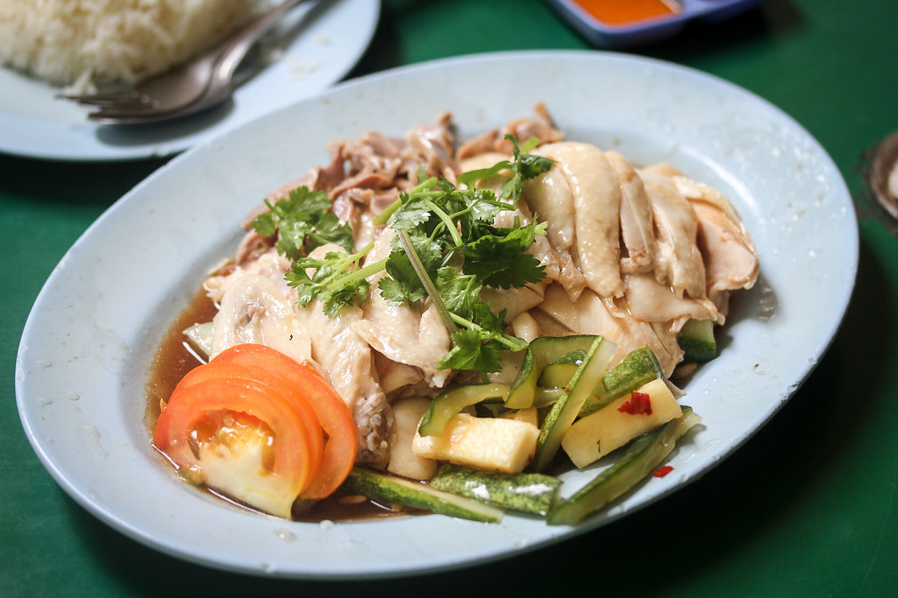

Hainan CHICKEN~~(BROTEIN) RICE

credit:Miss Tam Chiak
Ingredients:
For Chimken:
- Chimken with lots of BROTEIN
500kg preferred
Unplucked is best, the feather serve as extra BROTEIN
- 1 lb non-kosher salt
- 20-30 gal of water from MISSISSIPPI river
- 5 lb 10,000 year old cultivation manhua ginger root
- Jasmine || Hom Mali Rice